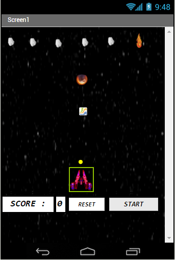
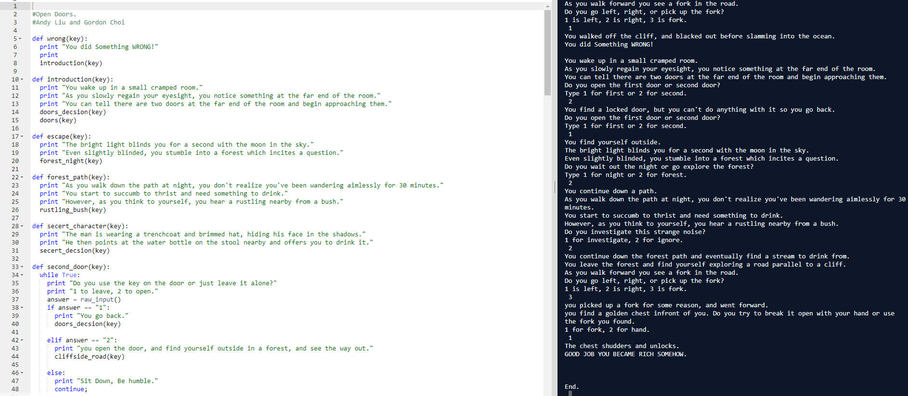
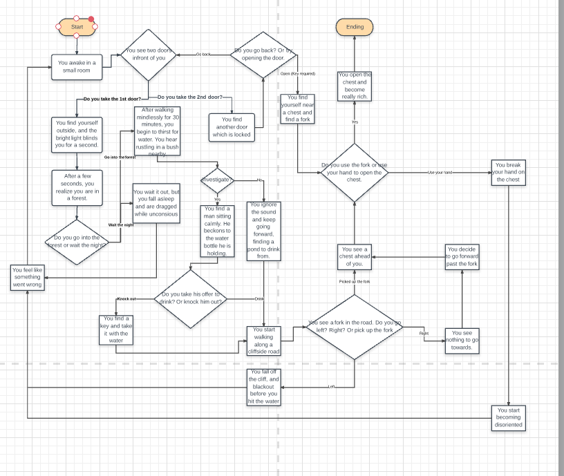

This was my remixed Scratch project of a falling Taco game. Tony and I added a new ocean theme, with the new goal to eat fishes and avoid octopus.

This was my created Monkey Maze game, where Tony and I created a game involving a monkey retrieving the banana.

This was my remixed Space Invaders app. Crystal Chen and I added a falling meteor system and new skins.
This was my To Do List app, where Crystal Chen and I added new features to a traditional To Do List, and an assignment sheet.

This was my interactive story, where we used a flow chart for a guideline. The story was about a man opening doors to find riches.
 